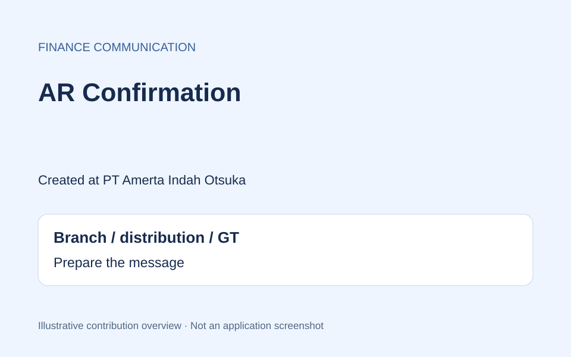

AR Confirmation at PT Amerta Indah Otsuka
I created the AR Confirmation application for branch, distribution, and General Trade (GT) use cases. It communicates transaction confirmations through a paid WhatsApp gateway and email, with due-date reminders and transaction-analysis capabilities described in my project experience.
The business need
Finance information needs to reach the appropriate business recipient through a usable channel. The application connects the transaction context with outbound communication without assuming that sending a message establishes that the recipient has agreed or paid.
Project focus
- Branch, distribution, and GT scope
The application supports the AR communication needs of these business segments.
- WhatsApp gateway and email
A paid WhatsApp gateway and email provide the outbound communication channels.
- Confirmations and reminders
Transaction confirmation and due-date reminders keep the communication tied to the relevant financial context.
How the workflow connects
The diagram explains business responsibilities and information flow, rather than the former company’s internal deployment.
My contribution
I created the AR Confirmation tool and its communication workflow, integrating a paid WhatsApp gateway and email for the branch, distribution, and GT audiences.
Functional architecture
The functional architecture connects transaction information, intended recipients, and the outbound communication channels. WhatsApp and email are delivery paths; the underlying finance information remains the context of the confirmation.
Experience & lessons
This project combines enterprise finance requirements with external messaging integration. A key lesson is to distinguish transaction state, message delivery, and the recipient’s response rather than treating them as the same event.